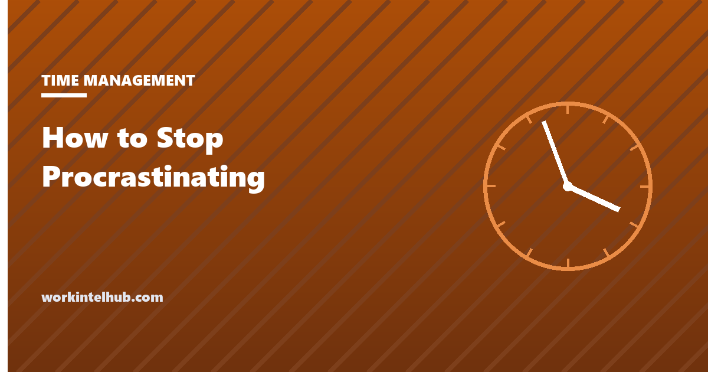

How to Stop Procrastinating

Procrastination is delaying a task you intended to do, knowing the delay will cost you. That last clause is what separates it from prioritising: the procrastinator expects to be worse off and does it anyway. Around one in five adults does it chronically, according to the largest review of the research, and nearly everyone does it sometimes. It is not laziness, and it is not a time management problem in the usual sense. The research of the last twenty years is fairly settled that it is an emotion problem: the task feels bad, and putting it off feels better, right now.
That finding matters because it tells you which advice will work. Tips that add pressure make an emotion problem worse; tips that make the task feel smaller, clearer or safer make it better. The quiz below names which of seven patterns you are in and gives the fix for that one, and the timer underneath gets you through the first two minutes, which is where most of the difficulty lives.
Find your pattern, then start
Ten statements: tick the ones that describe you this month
Start the task in two minutes
Nothing typed here leaves your browser. The timer runs two minutes for the first action, then the work block you chose. Stopping after the two minutes is allowed; most people do not.
Why people procrastinate
Piers Steel's 2007 meta-analysis in Psychological Bulletin pooled 691 correlations from decades of studies and found that procrastination is best predicted by four things: how aversive the task is, how far away its reward is, how confident the person is that they can do it, and how impulsive they are. Steel's temporal motivation theory ties them together: the pull of a task rises with its expected value and confidence, and falls with delay and impulsiveness. A task that is unpleasant, distant, uncertain and competing with something pleasant now loses every time, until the deadline shrinks the delay and the task suddenly matters. That is why the night before works and the month before does not.
Sirois and Pychyl (2013) added the mechanism. Procrastination, in their account, is short-term mood repair: faced with a task that produces anxiety, boredom or self-doubt, people relieve the feeling by doing something else, and the relief is real, which is why the habit persists. The cost lands on a future self the present self does not much identify with. This is the finding that reframes the advice. Willpower and discipline are the wrong tools for a feeling; changing what the task feels like is the right one.
Two further results are worth knowing. Procrastination correlates with self-reported stress, illness and lower performance, so it is not a harmless quirk; and it is only weakly related to intelligence or ability, so it is not a sign of either. It is common in people who set high standards for themselves, which is why the "fear" pattern in the quiz exists and why some of the most capable people are the worst at starting.
The methods with evidence behind them
| Method | What it does | Evidence | Best for |
|---|---|---|---|
| Implementation intentions | "On Tuesday at 9, at my desk, I will draft section two" | Meta-analysis of 94 studies, effect size 0.65 on goal attainment | Undefined tasks; anything with no slot |
| The first action, timed | Name the smallest physical step and do only that, on a two-minute timer | Aversion is anticipatory; studies show mood improves once a task is started | Unpleasant tasks; low mood |
| Shorter deadlines with consequences | A draft due to a person on a date before the real deadline | Temporal motivation theory; students given interim deadlines outperform | Deadline-driven people |
| Lowering the stakes of the first version | A rough draft that will be discarded, a prototype, a version nobody sees | Perfectionism and fear of evaluation predict delay; reducing evaluation reduces it | Fear and perfectionism |
| Removing inputs | Phone elsewhere, chat closed, a return time | Interruptions every two minutes in recent workplace data; recovery is slow | Distraction |
| Self-compassion, not self-criticism | Forgiving the last delay rather than punishing it | Students who forgave themselves for procrastinating on one exam procrastinated less on the next | Everyone; the guilt spiral |
| Fewer commitments | Three outcomes a week, six tasks a day, a written not-now list | Choice overload and impulsiveness both predict delay | Overload |
The first row is the strongest single finding in the literature. Gollwitzer and Sheeran (2006) showed that deciding in advance when and where a task will happen roughly doubles the rate at which it gets done, because the decision is made once, in a calm moment, and the situation then triggers the behaviour. Our weekly planner and nightly six-task list are that method on a page, and the time blocking guide is the calendar version.
The seven patterns and their fixes
- Aversive task. Boring, tedious, pointless-feeling. Fix: shrink to the first physical action, set a short timer, pair it with something pleasant (a coffee, a podcast for the routine parts), and schedule it for a high-energy hour, not the end of the day.
- Undefined task. You do not know what done looks like or where to start. Fix: write the finished state in one sentence and the first action in another; if you cannot, the task is a project and needs breaking down before it needs doing.
- Deadline-driven. Nothing happens until the deadline is real. Fix: manufacture earlier deadlines with a person on the other end. "Draft to Priya by Wednesday" works where "start early" does not.
- Fear and perfectionism. Starting means producing something that can be judged. Fix: an explicitly bad first version, a throwaway draft, a time limit that makes perfection impossible. The eat the frog approach suits this pattern: the dreaded task first, before the day has time to build it up.
- Distraction. You start, something interrupts, you never return. Fix: environment, not willpower. The monk mode guide covers removing inputs at the source.
- Overload. Too much on the list, so the important things slip. Fix: fewer commitments, chosen in advance; the Eisenhower matrix is the sorting tool.
- Mood-dependent. Waiting to feel like it. Fix: act first; the feeling follows. Two minutes of the task changes the mood more reliably than any amount of waiting for the mood to change.
Most people are two patterns at once, which is why the quiz reports the top two. The fixes do not conflict; pick the one for the stronger pattern and add the second when the first is habitual.
If you manage someone who procrastinates
The same research applies. Pressure and monitoring address the symptom and worsen the cause: an employee who fears judgment delays more when watched. What works is what works for anyone: clear definitions of done, short interim deadlines with a real reader, permission to produce a rough first version, and protected time to do it in. The one-on-one is where the interim deadlines get set, and the 30-60-90 plan is the structure for a new hire who has not yet learned what the job's tasks feel like.
Chronic procrastination that persists across every kind of task, with real distress, is worth a conversation about support rather than discipline; it overlaps with ADHD, anxiety and depression often enough that the accommodation route is sometimes the right one, and the conversation is better had early than after a performance plan has started.
Key takeaways
- Procrastination is delaying a task you intend to do, knowing it will cost you. About one in five adults does it chronically.
- The research says it is an emotion problem: the task feels bad and avoiding it repairs the mood now, at the future self's expense.
- The four strongest predictors are how aversive the task is, how distant its payoff, how confident you are, and how impulsive you are.
- The best-evidenced fix is deciding in advance when and where: implementation intentions roughly double follow-through across 94 studies.
- Shrink the task to a two-minute first action and start; mood improves after starting, not before.
- Forgive the last delay. Self-criticism predicts more procrastination; self-compassion predicts less.
Frequently asked questions
Why do I procrastinate even when I know it will hurt me?
Because the relief of avoiding an unpleasant task is immediate and the cost is deferred to a future self you identify with less. Research by Sirois and Pychyl describes procrastination as short-term mood repair. The task feels bad, avoidance feels better now, and the habit is reinforced every time. Knowing the cost does not change the feeling; changing the task does.
Is procrastination a sign of laziness or poor time management?
No. It is only weakly related to ability or intelligence, is common among high achievers and perfectionists, and correlates with anxiety about evaluation. Time management systems help only when they make tasks smaller and clearer; adding pressure or scheduling more tightly usually makes it worse.
What is the fastest way to stop procrastinating on a task right now?
Name the smallest physical action that starts it, set a two-minute timer, and do only that. Aversion is mostly anticipatory, and it drops sharply once the task is under way. Then decide the next action before stopping. The tool on this page runs the timer.
Does the two-minute rule work?
For starting, yes. The version from David Allen's Getting Things Done says do anything under two minutes immediately; the version used here says commit to two minutes of any task. Both work because the barrier is starting, not continuing. The evidence for pre-deciding when and where to act is stronger still.
How do I stop procrastinating at work when everything is urgent?
Cut the list before you work it: three outcomes for the week, six tasks for tomorrow, the rest on a written not-now list. Procrastination on an overloaded list is often a refusal to choose. Then give the top item a time and place, remove the inputs that interrupt it, and produce a rough first version rather than a finished one.
When is procrastination a sign of something else?
When it persists across every kind of task, comes with real distress, and does not respond to structure. Chronic procrastination overlaps with ADHD, anxiety and depression. That is a reason to talk to a doctor, and at work a reason to ask about support before treating it as a performance problem.